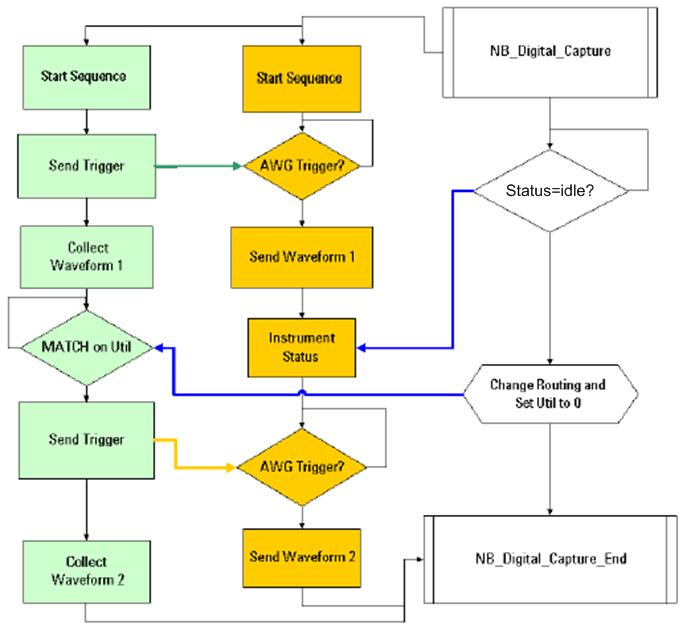

Non-blocking digital capture example
An example of the testmethod sequence and flow for an ADC using non-blocking digital capture is illustrated below.

Functional changes
- Introduced before SmarTest 6.3.2
An example of the testmethod sequence and flow for an ADC using non-blocking digital capture is illustrated below.
